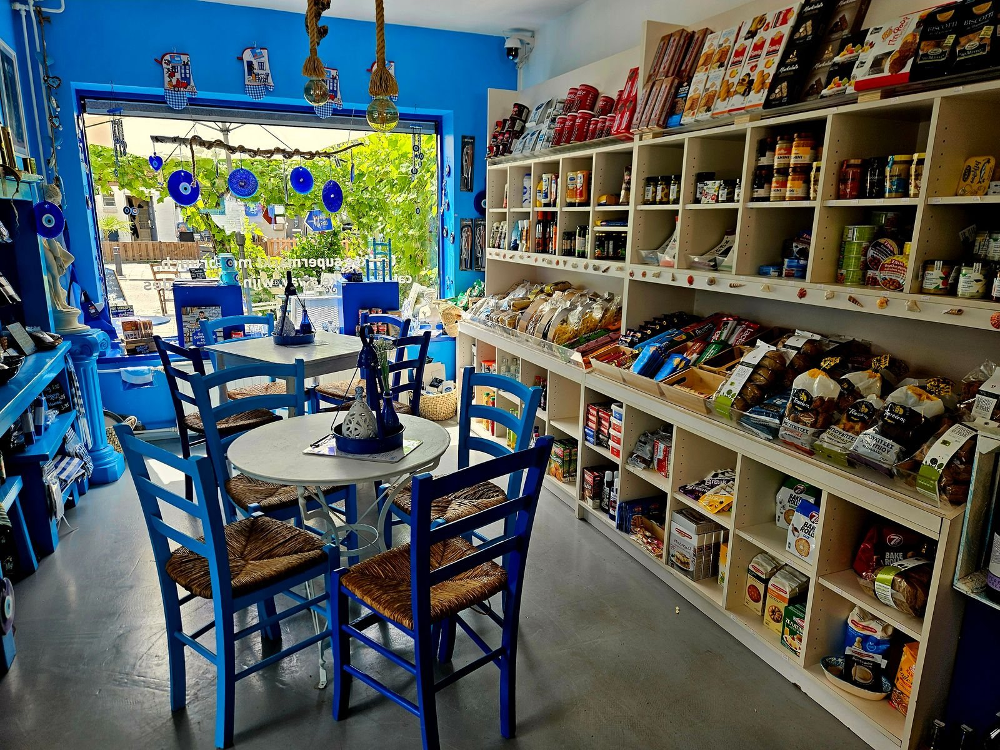
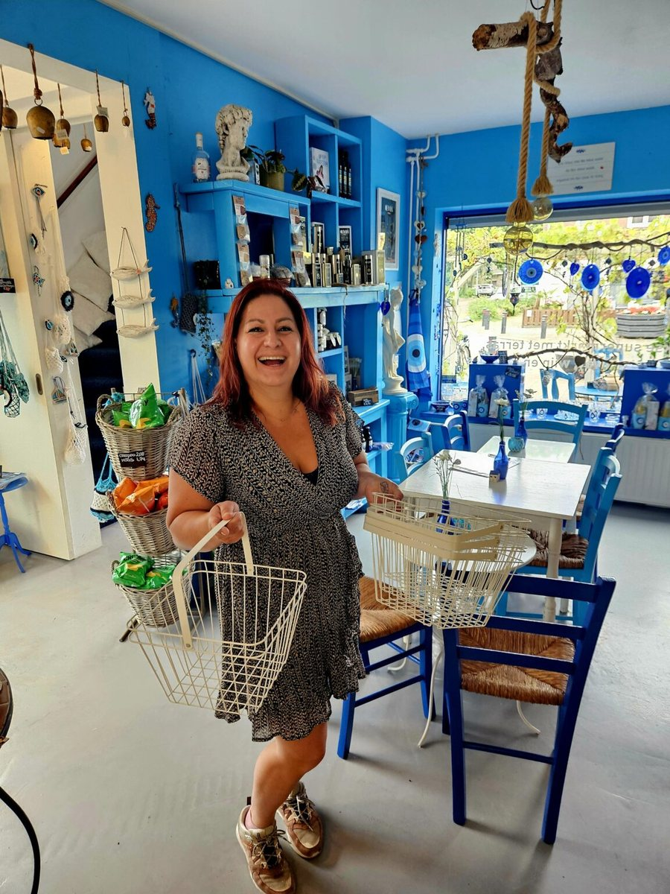

Een stukje Griekenland in Eindhoven
Griekse lunchroom en delicatessenwinkel in Woensel-West, op loopafstand van Strijp-S. Elke dag vers gekookt, om hier te eten of mee te nemen.
Winkelen, lunchen of meenemen
Alles met zorg gemaakt, zodat je je meteen thuis voelt.
Delicatessen
Olijfolie, ambachtelijke kazen, honing, koffie, wijn en bier, mezedes, kruiden en kleine Griekse cadeautjes.
Lunchroom & terras
Koffie met Grieks gebak, een lichte lunch of een flinke maaltijd. Binnen of op het terras.
Take-away
Geen tijd om te koken? Alle maaltijden zijn elke dag vers, met een menu dat dagelijks wisselt.
Catering
Van meze-planken bij de borrel tot complete maaltijden, voor feestjes en zakelijke bijeenkomsten.
Iets te vieren?
Een feestje, een zakelijke bijeenkomst of gewoon samen lekker eten: we stellen graag een menu op maat met je samen.

Over Anne
Kalimera!
Ik ben Anne Strik. Na ruim 15 jaar in de horeca en jaren van wijn- en spijsproeverijen heb ik een plek gemaakt waar smaak, gastvrijheid en mijn liefde voor de Griekse keuken samenkomen.
Die liefde begon op de Peloponnesos, waar mijn ouders een huis hebben. Daar leerde ik koken met pure ingrediënten, samen aan tafel eten en gerechten die je echt verwarmen.
Kom langs
Bel om een gerecht te reserveren of voor catering. Of loop gewoon binnen.
Anne's Taste of Greece
Griekse lunchroom en delicatessenwinkel met wijn, take-away en catering.
Openingstijden
De keuken sluit een uur eerder.